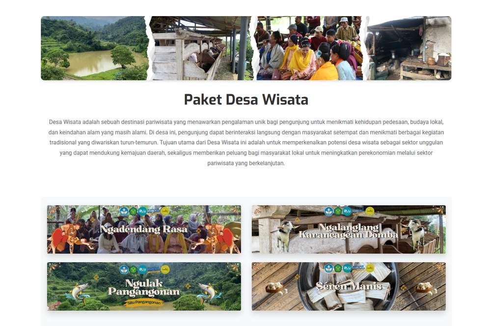
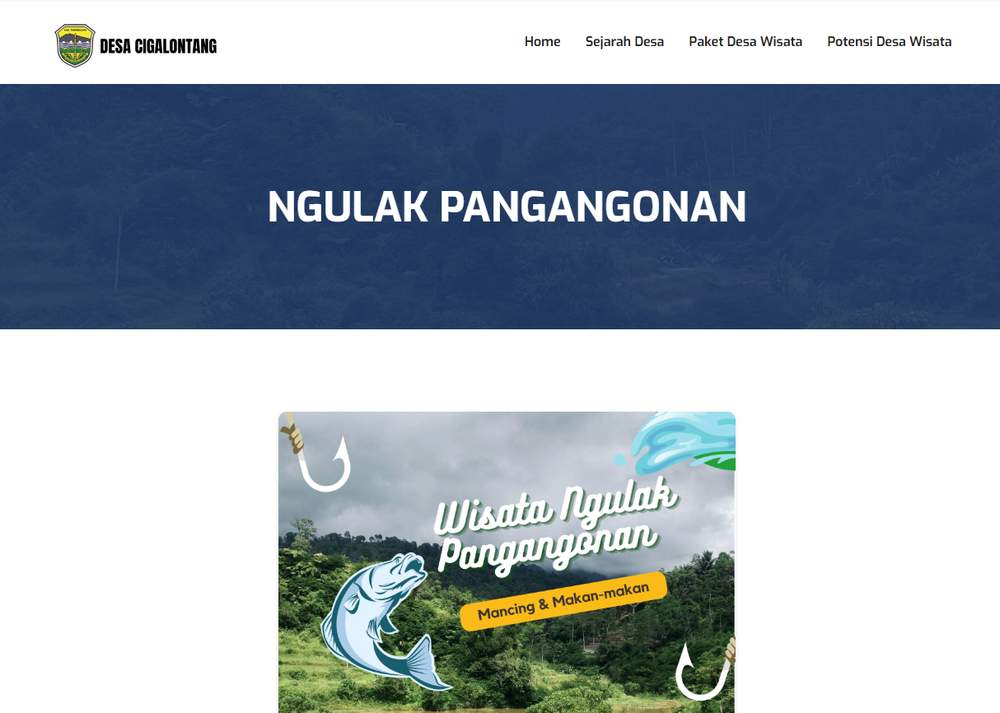
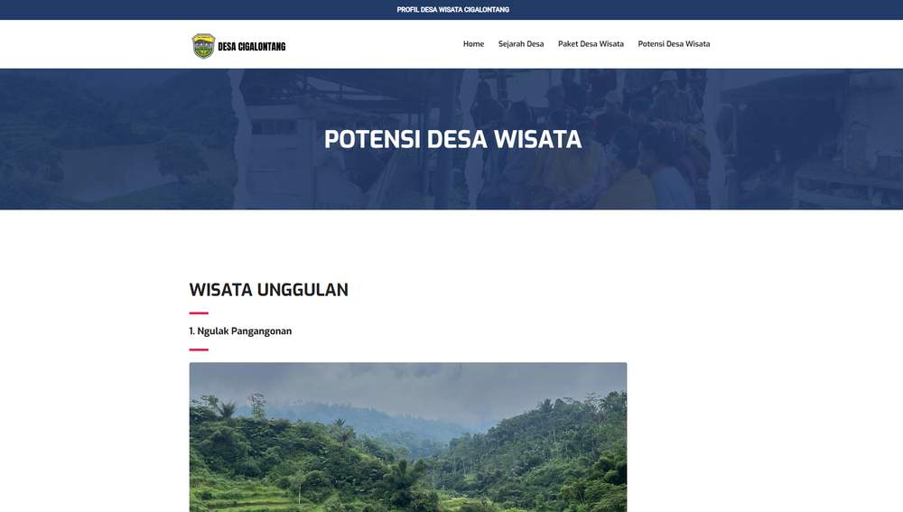

Faishal Nizaar Rizq
Web Developer & IT Support
Kontak
● Ciamis, Jawa Barat
☎ +62 823 2068 8672
✉ rizqfaishalnizaar@gmail.com
🔗 github.com/rfaishalnr
🔗 linkedin.com/in/faishal-nizaar-rizq
Keahlian
Web Development
PHP, Laravel, HTML, CSS, JavaScript, Tailwind
Database
MySQL
IT Support & Troubleshooting
Hardware, Software, Windows, Maintenance
Tools
Git, GitHub, XAMPP, MS Office
Bahasa
ID Indonesia (Native)
EN English (Intermediate)
Sertifikat
Sertifikat dan penghargaan yang telah saya raih dalam bidang pengembangan web dan IT.

SQL (Basic)
HackerRank • Sep 2026
Sertifikasi keahlian dasar dalam menulis query SQL dan manipulasi database relasional.

Certificate of Completion: Laravel
Cursa • Aug 2026
Kursus komprehensif framework PHP Laravel untuk pengembangan web tingkat lanjut.

Fullstack Laravel 12 & Vue 3
BuildWithAngga • Jun 2026
Membangun aplikasi forum modern dengan arsitektur SPA menggunakan Vue 3 dan Laravel 12.

SaaS Menu Digital Multi-Toko
BuildWithAngga • Jun 2026
Pengembangan platform SaaS point-of-sales & QR order untuk multi-tenant menggunakan ekosistem Laravel 12.

Sertifikat Magang (Internship)
PT Telkom Akses • Aug 2025
Magang pada Divisi Konstruksi dalam pengelolaan data, administrasi teknis, dan IT Support operasional.
1. PATA - Pengelolaan Tagihan Mitra
Sistem manajemen tagihan mitra berbasis web untuk PT Telkom Akses Tasikmalaya guna mengurangi kesalahan dokumen tagihan. Dilengkapi fitur monitoring status dan pengelolaan waspang.


2. PesanMakan - Multi-Tenant Digital Menu
Platform SaaS multi-tenant untuk manajemen restoran dengan QR Code Ordering, Midtrans Payment Gateway, dan real-time order tracking berbasis Laravel 12.


3. Website Profil Desa Wisata Cigalontang
Website informasi publik untuk mempromosikan sejarah, potensi UMKM, dan katalog paket wisata desa sebagai kontribusi digital pada program KKN Universitas Siliwangi.



